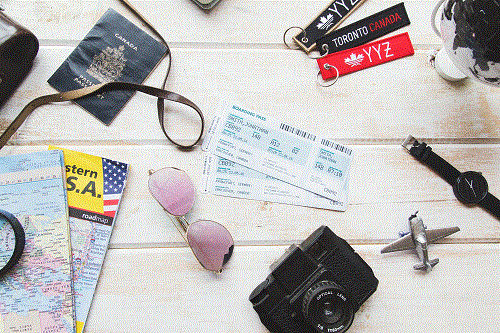
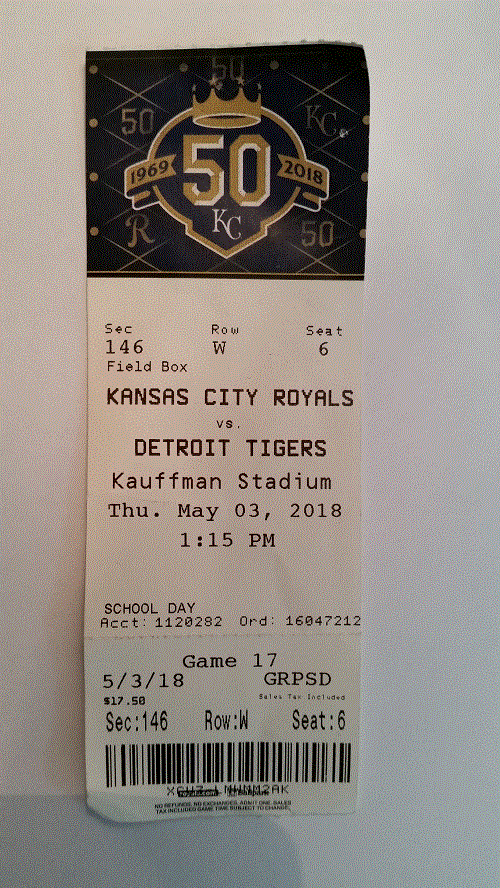
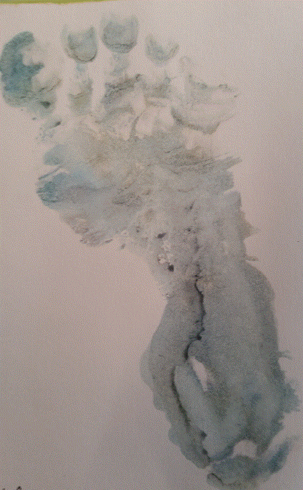

Ephmera
- What Is Ephemera?
- Ephemera are just collictible items. Usually things that were popular for a short amount of time. This would include things like old passports, postcards, playing cards, maps and more.
- What If I don't Have Any Ephemera?
- If you don't have any vintage keepsakes lying around, there are still lots of options. What about tickets from sporting events, concerts, or those first dates?  Another good option are notes and cards that you have written or received from loved ones. Those tiny hospital bracelets, removed from your newborn when you brought them home, handprints, footprints, and your children's art work can serve as ephemera.
- Putting It All Together
- The layout below shows the use of ribbons, charms, button photo-corners, paper piecing and die-cut hearts.
